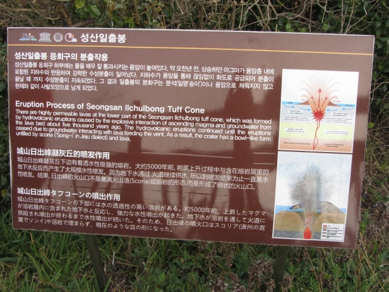

濟州島城山日出峰(2): 登山口 攀登上 城山日出峰山頂
在城山日出峰園區入口購了入場票, 通過驗票口, 沿海濱的步道往上走了約七分鐘, 便來到城山日出峰登山口。右邊的是下山路; 前面的是登山路, 往上一直走便可抵達山頂。從這裡開始, 道路愈來愈陡斜, 開始比較辛苦了。

Okay! 開始正式登山。石頭爺爺在登山口歡迎及鼓勵所有旅客。
沿途都有離山頂距離及高度的標示。
離山頂距離: 274米
現在的高度: 海拔 77米
越走越高, 視野越廣闊。
沿途的店舖。
離山頂距離: 208米
現在的高度: 海拔 90米
沿途會經過很多奇形怪狀的岩石, 都是經歷幾千年雨水不斷侵蝕而成。
景色越來越壯麗。
繼續往上走。
可以清楚看到城山碼頭和海堤上的紅色燈塔和白色燈塔。我們便是從那裡走來的, 其實頗遙遠呢!
一直往上走。
來到一個比較寬闊的觀景台。除了可以在這裡欣賞風景外, 也順便休息一會。
哈哈~~ 看到圖片中間那白色小石屋了! 她便是在那裡等我回去! 現在會否很心急呢?
城山地區海岸地形變化的介紹牌。城山日出峰原本是海中的一座火山島嶼, 經過數千年海水的侵蝕, 逐漸變小, 而被侵蝕的沙石流往西南方, 堆積在濟州島東面海岸, 最終與濟州島相連成為一體, 就是我們現在所看到的形狀, 怎不令人讚嘆大自然的奧秘。
稍微休息一下後, 接著是全程最陡斜的石級, 也是登上山頂前最後的考驗。
城山日出峰山頂
走完最後一段陡斜的石級後, 眼前豁然開朗, 海闊天空, 終於來到了海拔182公尺的城山日出峰山頂。看看手錶, 差不多下午四時五十五分, 從售票處開始計, 走走看看, 約半小時便來到山頂。
很多旅客都坐在山頂觀景台的樓梯上欣賞風景。
山頂上簡單介紹了火山爆發後如何形成城山日出峰的碗狀火山口。

最吸引我當然是凹陷的巨大碗狀火山口。肯定沒有從上空看那麼壯觀, 但當想到現在是身歷其境站在火山口的邊緣, 感覺卻十分滿足。
凝望了巨型碗狀火山口幾分鐘, 也思考了一些事情, 感覺真是十分奇妙, 除了再讚嘆大自然的奧秘外, 不知道還可以說什麼。接著往另一邊俯瞰日出峰山下的優美景色。
韓國濟州、本島南部春遊
(上: 濟州篇)
- 濟州島城山美麗度假村 優美日出 悠閒早餐
- 濟州島美麗度假村 步行往 城山碼頭
- 濟州島城山 乘渡輪往 牛島 沿途海鷗伴隨
- 渡輪原來去了 濟州島牛島下木洞港
- 濟州島牛島遠足路線
- 濟州島牛島遠足(1): 一開始走錯路 返回下木洞港碼頭起點
- 濟州島牛島遠足(2): 下木洞港 至 上牛目洞
- 濟州島牛島遠足(3): 上牛目洞 至 牛島郵政局
- 濟州島牛島遠足(4): 牛島郵政局 至 望東山
- 濟州島牛島遠足(5): 望東山 至 牛島峰登山口
- 濟州島牛島海岸路 絕美油菜花田景色
- 濟州島牛島黑沙海水浴場 | 鮑魚飯午餐
- 濟州島牛島黑沙海水浴場、東岸鯨窟
- 濟州島牛島遠足(6): 攀登上 牛島峰 — 登山口至山脊
- 濟州島牛島遠足(7): 攀登上 牛島峰 — 山脊至頂峰
- 濟州島牛島峰燈塔 絕美壯麗景色
- 濟州島牛島峰燈塔公園 韓國燈塔區
- 濟州島牛島峰燈塔公園 世界燈塔區
- 濟州島牛島遠足(8): 牛島峰燈塔 下山至 指頭青沙
- 濟州島牛島遠足(9): 指頭青沙 至 天津港口
- 濟州島牛島天津港口 | 回程船票原來也可以在這裡登船
- 濟州島牛島天津港 乘船返回 城山碼頭
- 濟州島城山碼頭 步行往 城山日出峰海邊入口
- 濟州島城山日出峰(1): 城山日出峰海邊入口 步行往 登山口
- 濟州島城山日出峰(2): 登山口 攀登上 城山日出峰山頂
- 濟州島城山日出峰(3): 城山日出峰山頂 下山返回 海邊出入口
- 濟州島城山日出峰(4): 城山日出峰海邊出入口風光
- 濟州島圩舠橋頭附近餐館晚餐: 鮑魚湯、燒魚